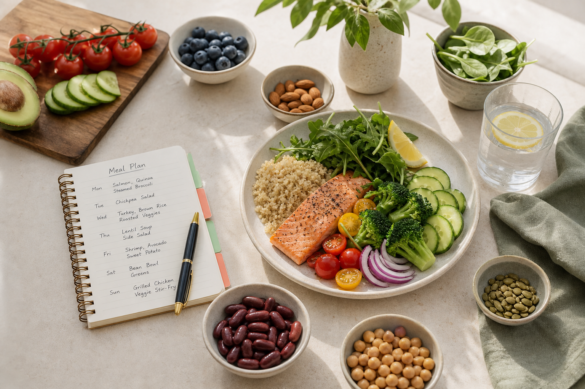
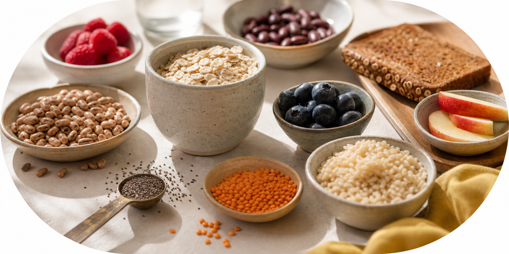
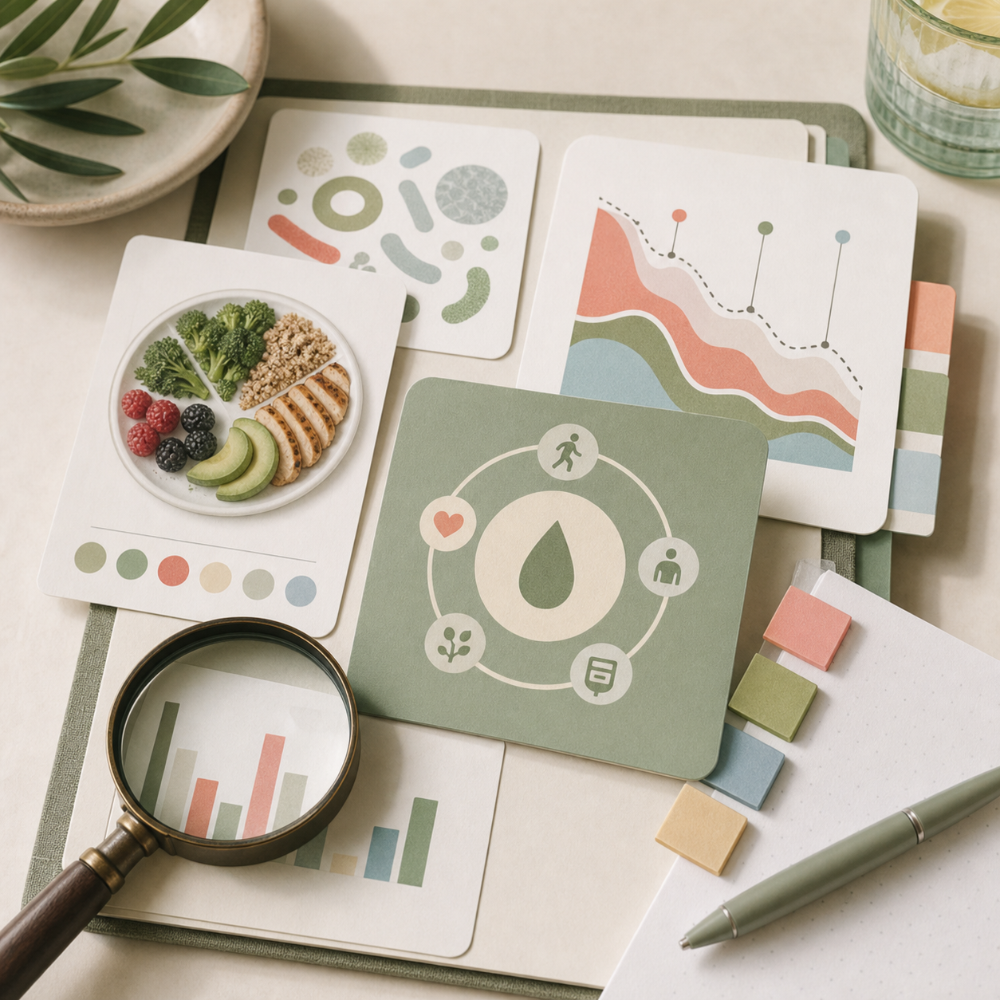
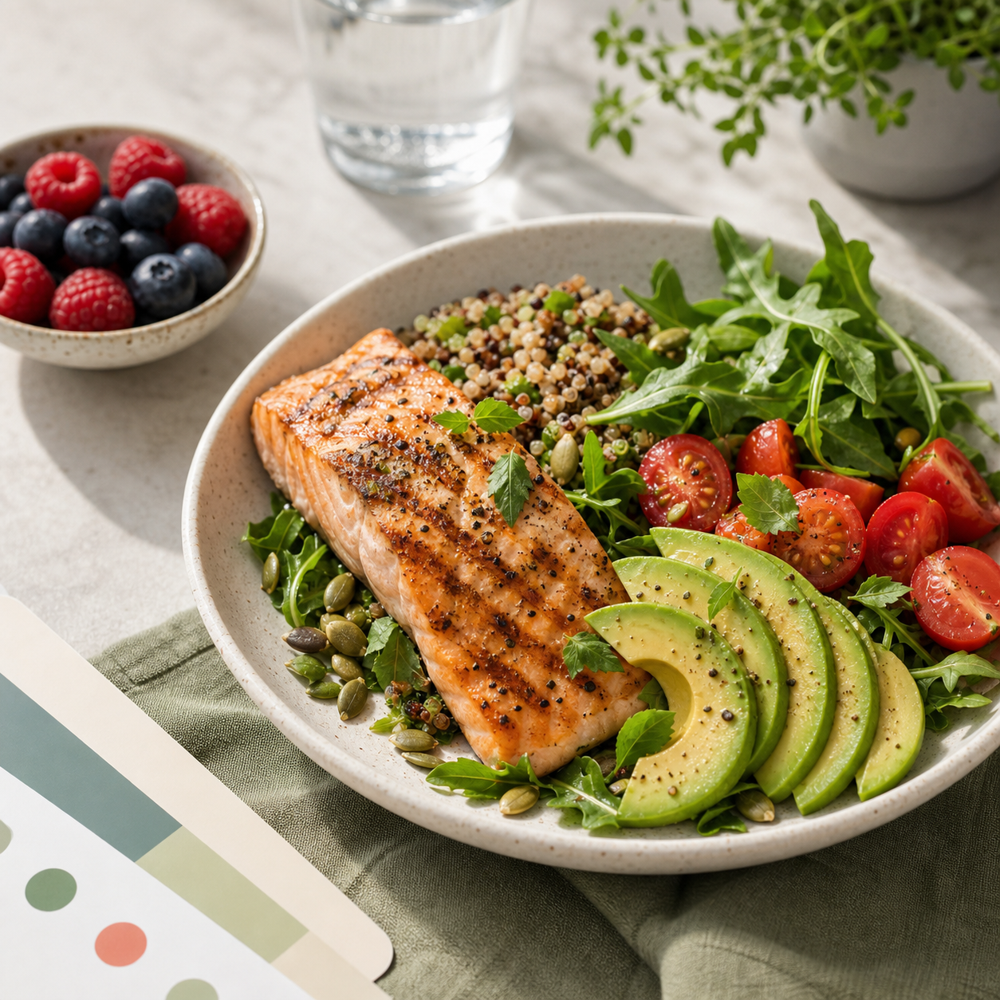

"Cici really knew her stuff when it came to diabetes management and nutrition. Talking to her opened my eyes to a whole new understanding of diabetes and nutrition."
Client of RD CiciNutriAll Diabetes Care
Diabetes nutrition care, made personal.
Registered dietitians help you understand blood sugar, build culturally realistic meals, and create a diabetes management plan that fits your life.
A dedicated diabetes program from NutriAll Wellness.
Diabetes is a chronic metabolic condition marked by elevated blood glucose. Our team focuses on what you can do day to day: meals, monitoring, medication awareness, weight goals, heart health, and sustainable behavior change.
99%
of many NutriAll clients pay $0 using eligible insurance benefits
Diabetes care areas
Support for the real decisions behind blood sugar.

Meal planningCulturally realistic meals for your schedule. Blood sugar patternsUnderstand what your numbers are telling you.
Carb confidencePortions, pairing, and timing without fear. Insurance benefitsCheck whether care may cost $0.
Research explainedPlain-English takeaways from diabetes studies. Dietitian supportRegistered guidance for daily decisions. Recipes you can repeat High-protein, fiber-forward ideas built from the NutriAll library.
Diabetes-friendly recipesPractical meals, snacks, and planned treats.


What is diabetes?
Food choices are data, not judgment.
Diabetes management is easier when you know how meals, medication, activity, and stress connect with glucose numbers. We translate those patterns into clear next steps you can repeat.
Talk to a dietitianRegistered Dietitian Nutrition Counseling
Why choose us
Clinical guidance, cultural fluency, and insurance-aware care.
NutriAll dietitians conduct in-depth assessments and create customized Diabetes Management Programs. Care is available across multiple languages and cultural backgrounds, and most insurances are accepted.
01
Personalized
Plans are shaped around your food preferences, culture, medications, and health goals.
02
Holistic
Support covers meals, monitoring, weight, cardiovascular risk, and behavior change.
Client outcomes
Support that changes how people live with diabetes.
Clients describe clearer nutrition choices, better blood sugar control, and feeling less alone after working with NutriAll registered dietitians.
"Kristie transformed my approach to nutrition, contributing significantly to my overall well-being and better management of diabetes."
Client of RD Kristie"RD Tan helped me get through it one step at a time. I am now living like a normal person and eating healthy without medication."
Client of RD TanFree intro call